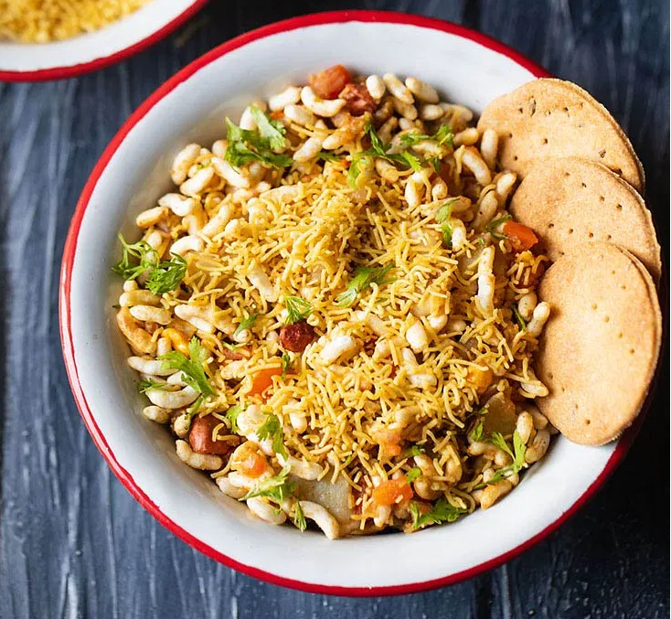
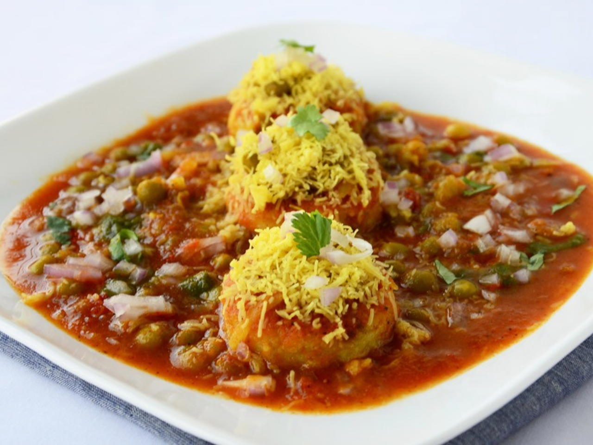
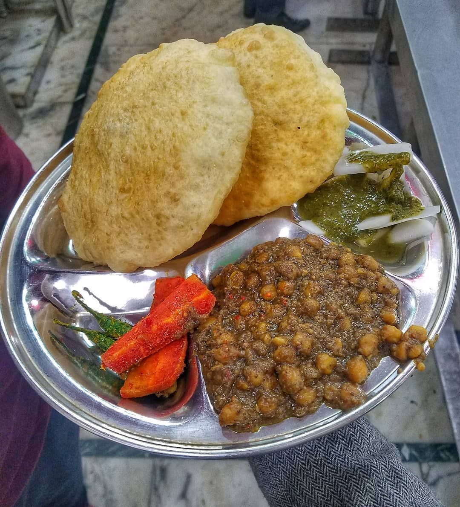
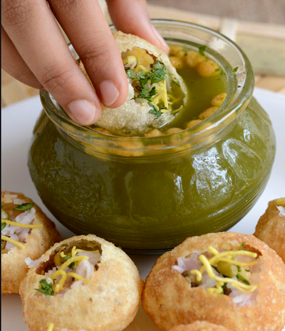
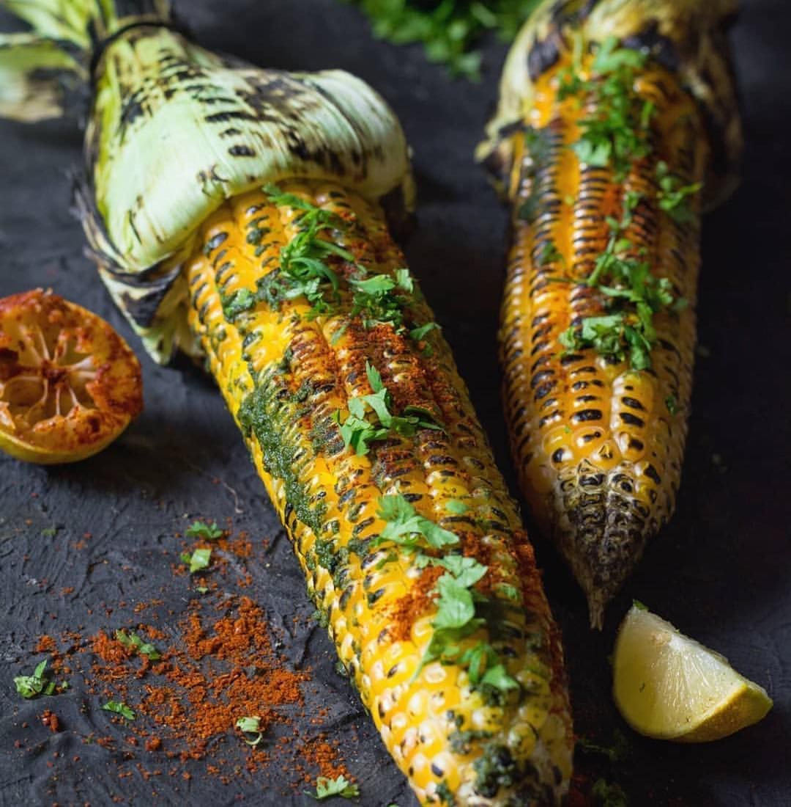

A fried or baked pastry with a savoury filling, such as
spiced potatoes, onions, peas, cheese, or lentils. Typically
seen in a cone shape
Ingredients
1 1/2 cups ready samosa dough
2 tablespoon oil to deep fry
1/2 teaspoon cumin seeds
1 teaspoon coriander seeds
2 chopped green chillies
1 inch chopped ginger
2 peeled, boiled medium potatoes
1/2 teaspoon red chilli powder
1/2 teaspoon garam masala powder
1/2 teaspoon dried mango powder
2 tablespoons chopped fresh coriander leaves
¼ cup boiled green peas
Salt to taste
Date and tamarind chutney to serve
Steps
Heat 2 tsps oil in a non-stick pan, add cumin seeds and saute till their colour changes.
Add coriander seeds, green chillies and ginger and sauté for 1 minute. Mash potatoes and add and mix well.
Add red chilli powder, garam masala powder, dried mango powder, coriander leaves, green peas and salt and mix well.
Cook for 2-3 minutes. Remove from heat and set aside to cool.
Divide samosa dough into equal portions and roll out into thin oblong discs and cut each disc into half.
Apply a little water to the edges of each half and shape them into a cone.
Stuff the cone with some potato-green pea mixture, shape them into samosa and seal the edges by pressing.
Heat sufficient oil in a kadai, slide the samosa, a few at a time and deep-fry till golden and crisp.
Drain on absorbent paper.
Serve hot with sweet tamarind chutney.
Exotic Veg Pakora
Similar to a samosa, pakora is a savory fried Indian/Pakistani fritter
commonly enjoyed as an afternoon snack or as an appetizer. Can be filled with mixture
of vegetables, onion, potato, aubergine, cottage cheese(paneer), and cauliflower.
Ingredients
1 medium tomato
1 small green zucchini
1 small yellow zucchini
1 medium long brinjal
1 1/2 cups gram flour
¼ teaspoon turmeric powder
1/2 teaspoon carom seeds
Salt to taste
1/2 teaspoon roasted cumin powder
1/2 teaspoon red chilli powder
¼ teaspoon baking soda
Oil to deep fry
Chaat masala to sprinkle
Tomato ketchup to serve
Steps
Whisk together gram flour, turmeric powder, carom seeds, salt, cumin
powder, chilli powder and sufficient water to a thick batter of coating
consistency. Add baking soda and whisk again.
Slice tomato, green and yellow zucchini and brinjal into thin roundels.
Heat sufficient oil in a kadai.
Dip vegetables, one by one, in the batter and deep-fry in hot oil
till golden brown. Drain on absorbent paper.
Sprinkle some chaat masala on top and serve hot with tomato ketchup.
Bhel Puri

A type of chaat that is crispy, sweet, tangy, spicy mixture of many edibles.
Ingredients
2 cups puffed rice (kurmura/murmura)
1/2 cup sev
¼ cup roasted masala chana dal
¼ cup roasted peanuts
8 crisp papdis
1 medium onion
2 medium potatoes
2-3 green chillies
Salt to taste
¼ cup green chutney
1/2 cup tamarind chutney
2 tablespoons garlic and red chilli chutney
1 teaspoon lemon juice
Some fresh coriander leaves
Steps
Peel onion and chop finely. Clean coriander leaves, wash well and then chop
finely. Boil potatoes, peel and cut into bite sized pieces. Wash, remove stem
and finely chop green chillies.
Combine puffed rice, onion, roasted chana dal, peanuts, potatoes, green
chillies, half of the sev and toss well. Add four crushed puris and mix. Add salt
to taste. Add the three chutneys as per your taste and mix well. Add lemon juice and mix.
Garnish with chopped coriander leaves and the remaining sev.
Ragda Patties

A type of chaat in which pan-fried or shallow fried potato patties are topped with ragda
(dried peas curry) and various chutneys, sev and spice powders.
Ingredients
1¼ cups dried white peas
4 large potatoes boiled and mashed
¼ teaspoon turmeric powder
Pinch of Asafoetida
Salt to taste
2 tablespoons cornflour/corn starch
2-3 chopped green chillies
Sunflower oil for shallow frying
Green chutney as required
Sweet date and tamarind chutney as required
2 medium onions chopped
2 teaspoons chaat masala
2 tablespoons freshly chopped coriander leaves
Steps
Soak dried peas in three cups of water for about six hours. Drain and boil in three to
four cups of water with turmeric powder, asafoetida and salt till soft. Mash the peas slightly.
Add a little water if too thick and simmer for ten minutes. Keep the ragda hot.
Add cornflour, green chillies and salt to potatoes in a bowl and mix well. Divide into
eight equal portions and shape into balls. Flatten slightly.
Heat a little oil in a frying pan and fry pattice gently on both sides on medium heat
till evenly browned. Keep warm.
To serve, place two pattice on a plate and pour ragda on them.
Drizzle green chutney and sweet date and tamarind chutney, sprinkle onions, chaat
masala and coriander leaves.
Pav Bhaji
A fast food dish from India, served piping hot. Consists of a thick vegetable curry made of spicy mashed potatoes
and served with a soft bread roll/buns.
Ingredients
8 bread buns(pavs)
2 large boiled, peeled and quartered potatoes
8-10 boiled cauliflower florets
1 medium finely chopped green capsicum
1/2 cup boiled fresh green peas
1 1/2 tablespoons pav bhaji masala
2 tablespoons oil
2 tablespoons butter + for toasting + for serving
2 medium finely chopped onions + for serving
1 tablespoon ginger-garlic paste
2 tablespoons red chilli paste
2 tablespoons red chilli powder
2 finely chopped tomatoes
1 1/2 tablespoons chopped fresh coriander leaves
Lemon wedges for serving
Steps
Heat oil in a non-stick pan, add 1 tbsp butter and let it melt. Add onions and sauté till translucent.
Add ginger-garlic paste and sauté till raw smells disappear. Add red chilli paste and red chilli
powder,mix well and saute for 1-2 minutes.
Add tomatoes, mix well and saute till they turn pulpy. Add salt and mix well.
Add potatoes, and cauliflower and mash the mixture well with a masher.
Add pav bhaji masala and mix well. Add ¼ cup water and mix, cover and cook for 4-5 minutes.
Add capsicum and green peas and mix well. Add remaining butter and mix well. Add coriander leaves and
mix well. Take the pan off the heat.
Heat a little butter in a non-stick tawa, place two slit pavs on it and toast for 1 minute, fold the
pavs and apply a little more butter on the sides and toast for 1 minute. Take them off the tawa. Toast the
remaining pavs similarly.
Place 2 pavs on each serving plate, keep a portion of bhaji on the side, put a a little butter on top
of the bhaji and serve immediately with chopped onion and a lemon wedge.
Chole Bhature

An exquisite meal that you can usually find in North Indian roadside eateries called dhabas, or at
Indian restaurants. A spicy, traditional blend of chickpeas (chana/chole masala) served with a puffy Indian bread called a Bhatura.
Ingredients
1 cup chickpeas (kabuli chana) soaked overnight and drained
2 tea bags
Salt to taste
2 tablespoons ghee
1 teaspoon cumin seeds
2 slit green chillies
1 tablespoon ginger-green chilli paste
1 tablespoon coriander powder
½ teaspoon cumin powder
1 teaspoon red chilli powder
1 teaspoon chole masala
½ teaspoon dried mango powder
1 tablespoon dried, roasted, and coarsely crushed pomegranate seeds
1 teaspoon garam masala powder
Fresh coriander sprigs for garnishing
2½ cups refined flour (maida)
½ teaspoon baking powder
Pinch of baking soda
Salt to taste
2 teaspooons powdered sugar
½ cup yogurt
1 tablespoon oil + for greasing and to deep fry
Steps
Take chickpeas in a pressure cooker. Add tea bags, 6-8 cups water and salt, cover and cook for 15-20 minutes
or till fully done and soft. Drain the chickpeas, discard the tea bags and reserve the stock.
Sieve together flour, baking powder, baking soda, salt and powdered sugar in a parat. Add yogurt and mix well.
Add some water and knead into a soft dough. Add 1 tablespoon oil and knead well. Set aside for 15-20 minutes.
Heat ghee in a non-stick pan. Add cumin seeds and green chillies and sauté for 30 seconds.
Add ginger-green chilli paste and sauté for 30 seconds. Add coriander powder, cumin powder and chilli powder and mix.
Add chole masala and dried mango powder and mix. Add reserved stock, mix and bring mixture to boil.
Add boiled chickpeas and ¾ cup water, mix and cook on medium heat for 8-10 minutes. Lightly mash.
Add dried pomegranate powder and garam masala powder and mix. Add ¼ cup water. Chop tomatoes, add to pan, mix
and cook for 2-3 minutes.
Heat sufficient oil in a kadai. Divide the dough into equal portions and shape into balls. Grease worktop with
some oil and roll each ball into thick discs.
Deep-fry each disc in hot oil till light golden and puffed up. Drain on absorbent paper.
Garnish chole with a coriander sprig and serve hot with bhature.
Veg Momos
A type of East and South Asian steamed filled dumpling, popular across the Indian subcontinent and the
Himalayan regions of East-South Asia border.
Ingredients
1 cup refined flour
10 finely chopped french beans
1 medium, finely chopped carrot
4-5 finely chopped fresh button mushrooms
2 finely chopped spring onions
1/4 cup bean sprouts
8-10 chopped cashew nuts
1 inch piece finely chopped ginger
1 finely chopped green chilli
8-10 crushed black peppercorns
1/2 tablespoon light soy sauce
1 teaspoon sesame oil
Optional--1/4 teaspoon MSG
Salt to taste
1 chopped spring onion greens
Steps
Mix the refined flour with five tablespoons of water and knead into a stiff dough. Cover with a damp cloth and set aside
for fifteen minutes.
For the filling, combine the French beans, carrot, mushrooms, spring onions, bean sprouts, cashewnuts, ginger, green chilli,
peppercorns, soy sauce, sesame oil, MSG and salt in a large bowl.
Divide the dough into sixteen equal portions and roll into small thin discs. Place a spoonful of the vegetable filling in
the centre of each disc and bring the sides together in the centre, pinching firmly together to form a dumpling.
Line a steamer rack with a clean, damp piece of muslin and arrange the momos on it. Place the rack in the steamer, cover
and steam for eight to ten minutes, until the momos are cooked through.
Transfer to a serving plate. Garnish with spring onion greens and serve hot with Sichuan sauce.
Vada Pav
A vegetarian fast food dish that consists of a deep fried potato dumpling placed inside a bread bun (pav)
sliced almost in half through the middle. Resembles a burger, but prepared through a unique style in spices.
Ingredients
6 large boiled, peeled and mashed potatoes
8-10 gram flour(besan) cloves
4 green chillies
1/4 teaspoon turmeric powder
Pinch of asafoetida
1 tablespoon lemon juice
1/4 chopped bunch fresh coriander leaves
Salt to taste
Oil to deep fry
Pavs
1 1/4 cup gram flour(besan)
Pinch of soda bicarbonate
1/2 teaspoon red chilli powder
Salt to taste
1 tablespoon oil
Red chutney
3 tablespoons grated dry coconut (khopra)
2 teaspoons red chilli powder
4-6 garlic cloves
1/2 cup gram flour crumbs (besan boondi)
Steps
For red chutney, grind together coconut, red chilli powder and garlic in a mixer. Heat oil in a non stick pan,
add this mixture and sauté for a minute. Add the gram flour crumbs and mix well and remove from the heat. Season with salt. Set aside to cool.
Grind together green chillies and garlic to a paste. Mix the potatoes, garlic-green chilli paste, turmeric powder, asafoetida, lemon juice,
coriander leaves and salt in a bowl. Divide into eight equal portions and roll them into balls.
Mix together gram flour, soda bicarbonate, turmeric powder, red chilli powder and salt in a bowl. Heat one-tablespoon oil and add it to
the gram flour mixture. Add sufficient water and whisk to make a coating consistency batter. Heat sufficient oil in a kadai.
Dip the potato mixture balls in the batter and deep fry in hot oil till golden brown in colour. Drain on an absorbent paper.
Slit the pavs horizontally without cutting through, spread the red chutney on the inner sides of the pav and stuff it with hot vadas. Serve hot.
Veg Biryani
A perfect dish for any occasion and a treat to your all of your senses. The magic is created when whole spices, fragrant rice, nutritious
veggies and the aromatic saffron blend together perfectly. Plus this one is a microwave version of it, so it really is a quick biryani unlike a traditional
clay pot one that takes hours to build and cook.
Ingredients
1 1/2 cups Basmati rice
2 medium 1/2 inch carrot pieces
1/2 inch 15 pieces french beans
10-12 cauliflower florets
1 cup shelled green peas
Salt to taste
8 green cardamons
1 black cardamom
15 cloves
1/2 inch cinnamon stick
1 bay leaf
1/2 teaspoon caraway seeds (shahi jeera)
1 1/2 tablespoons ginger-garlic paste
1 teaspoon turmeric powder
1 tablespoon red chilli powder
1 tablespoon coriander powder
1/2 cup yogurt
1/2 teaspoon rose water
Few strands saffron (kesar)
1 cup fresh tomato puree
1 teaspoon garam masala powder
2 tablespoons chopped fresh coriander leaves
2 tablespoons chopped fresh mint leaves
Steps
Boil rice in four cups of salted boiling water with two green cardamoms, one black cardamom, five cloves, half inch stick of cinnamon, until
three-fourth done. Drain excess water and set aside. Heat a non-stick pan. Add the remaining green cardamoms, cloves, black cardamom and cinnamon
along with bay leaf and caraway seeds and roast. Add onions, carrot, French beans, cauliflower florets and green peas.
Sprinkle salt, cover and cook on medium heat for two minutes. Add ginger-garlic paste mixed with a little water and stir. Cover and cook for two
minutes. Add turmeric powder, red chilli powder and coriander powder and cook.Whisk yogurt with rose water and saffron. Add a little water or milk
and whisk well. Add tomato puree to the vegetables along with half teaspoon garam masala powder and mix well. Simmer for two minutes. Take a microwave
safe deep bowl.
Arrange a layer of rice at the bottom. Over that arrange half the cooked vegetables followed by another layer of rice. Sprinkle half of the remaining
garam masala powder, half the coriander leaves, half the mint leaves and half the yogurt mixture. Arrange the remaining vegetables followed by the remaining
rice. Sprinkle the remaining garam masala powder, remaining coriander leaves, remaining mint leaves and the remaining yogurt mixture. Cover with a silicon
lid and cook in the microwave oven for four to five minutes on HIGH (100%). Let it stand for five minutes. Serve hot.
Pani Puri

A very popular street food of India and a favorite chaat snack of many folks and ours too, where crisp fried dough balls (puri) are stuffed with
potatoes, sprouts, spicy tangy water or sweet chutney.
Ingredients
Puri meant for pani puri as required (available at local Indian store)
1-2 medium raw mango
2-3 tablespoons coriander-mint-chilli paste
Salt to taste
1/2 teaspoon black salt
4 teaspoons roasted cumin powder
2 large squeezed lemons
1/2 cup sweet tamarind chutney
1 cup moong sprouts
Pinch turmeric powder
1 teaspoon red chilli powder
100 grams gram flour crumbs(besan boondi)
2 medium boiled, peeled and chopped potatoes
1 teaspoon chaat masala
Steps
Boil raw mangoes in one and a half cups of water till tender. Peel them and extract mango pulp. Mix together mango pulp, ground mint-coriander-chilli
paste, salt, black salt, three teaspoons roasted cumin powder and lemon juice.
Add five cups of water and mix well. For meetha pani add sweet tamarind chutney as per taste and mix. Chill in the refrigerator till use.
You can use a variety of fillings to fill the puris like sprouted moong or boondis mixed with potatoes etc. To make the sprouted moong filling,
blanch moong sprouts (you can also use mixed sprouts) with a pinch of turmeric powder and salt.
Drain thoroughly and add red chilli powder and mix. For the boondi-potato filling, soak boondi in water for five minutes. Drain and squeeze lightly
to remove excess water.
Mix it with cubes of boiled potatoes and season it with salt, chaat masala, red chilli powder and remaining cumin powder.
Fill each puri with a little sprouted moong or boondi-potato mixture, then fill it up with the flavoured water and relish the pani puri.
Chatpata Bhutta

A popular crunchy snack, especially during the monsoon season. A bite into the charred and soft kernels on the cob is enough to make you cherish this.
Ingredients
2 corn cobs
1 teaspoon lemon juice
1 tablespoon butter
1/2 teaspoon red chilli flakes
1/2 teaspoon red chilli powder
2 chopped green chillies
1 teaspoon brown sugar
Steps
Keep the cob on a twelve inch x twelve inch square size aluminium foil. Sprinkle salt, red chilli flakes, red chilli powder, chopped green chillies,
brown sugar and smear butter and lemon juice.
Wrap the aluminium foil around the cob and twist the end of foil like a toffee. Place the cobs on live charcoal on a barbecue and cook for fifteen minutes.
Open the foil and serve hot.
Paneer Kathi Roll
Warm, layered parathas filled with spicy paneer, mixed peppers and sweet caramelized onions
Ingredients
400 grams cottage cheese (paneer) cut into strips
4 whole wheat rotis
20-24 onion rings
1 chopped green chilli
1 tablespoon vinegar
2 tablespoons oil
1 medium sliced onion
1 medium tomato seeded and sliced
1 teaspoon ginger-garlic paste
1 teaspoon red chilli powder
1/2 teaspoon turmeric powder
1/2 teaspoon garam masala powder
2 tablespoons thick yogurt
Mayonnaise as required
Green chutney as required
Chaat masala to sprinkle
Steps
Take onion rings in a bowl, add green chillies and vinegar and set aside.
Heat oil in a non-stick pan, add sliced onions and sauté till golden brown. Add tomatoes and cook till the tomatoes are soft.
Add ginger-garlic paste, red chilli powder, turmeric powder and cottage cheese strips and sauté. Add garam masala powder and yogurt. Mix well and cook for 2-3 minutes.
Place each roti on work top, spread some mayonnaise and green chutney over it.
Keep a portion of the cottage cheese mixture in the centre and top up with some onion-chilli mixture. Sprinkle chaat masala and roll tightly.
Cut each roll into 2 equal pieces, wrap in colourful tissue napkin and arrange on serving platter. Serve immediately.